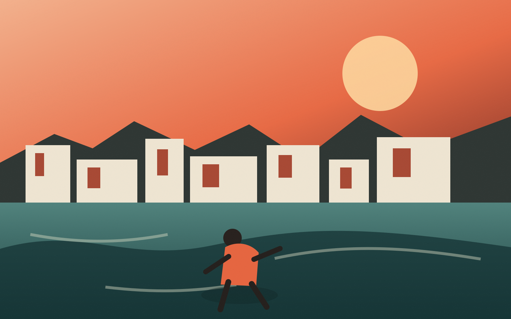
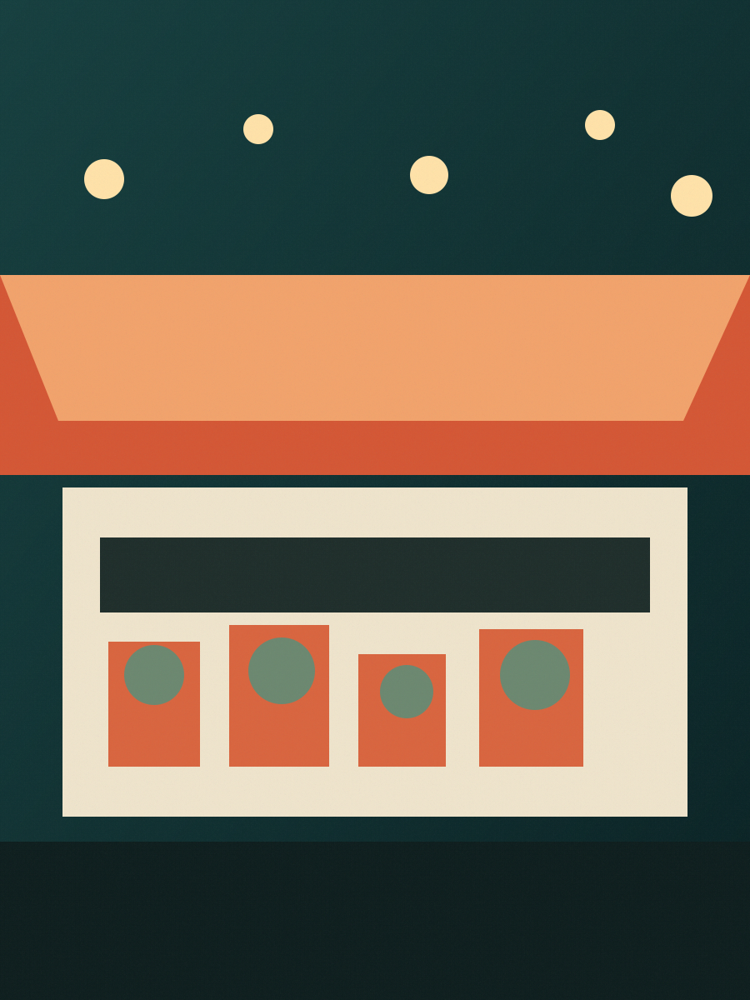
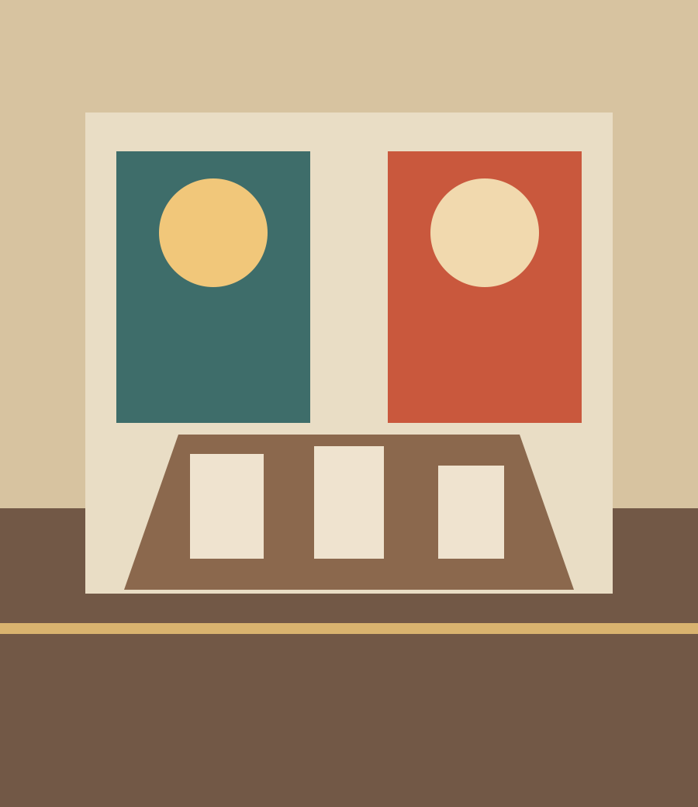
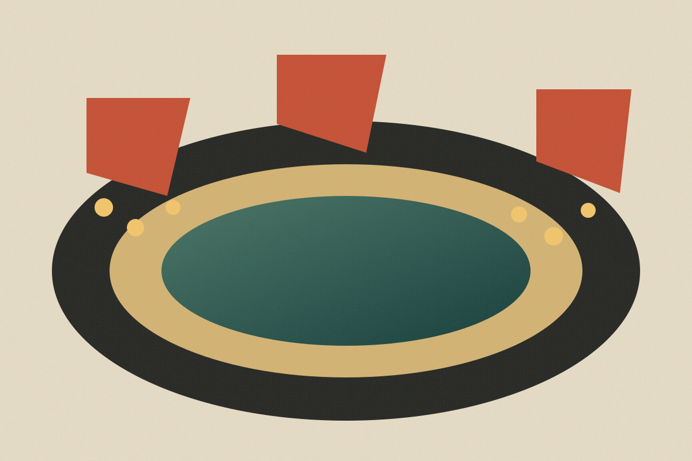
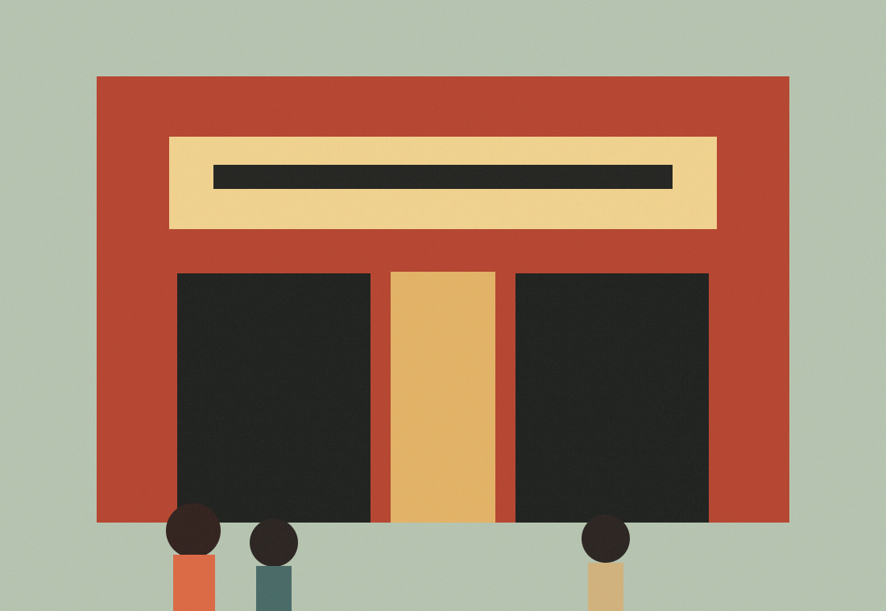

세계 · 해안 도시
오늘의 첫 장면
낯선 항구의 저녁이오늘의 첫 장면이 된 이유
바다와 도시가 맞닿는 산책로와 늦게 문을 여는 작은 식당. 여행 계획이 아니라 지금 보고 싶은 세계의 질감을 짧게 모았습니다.
Atlas Letter
SEOUL EDITION · SYNTHETIC / 2026.07
UX 시제품PERSONAL WORLD DISPATCH
세계와 가까운 곳의 이야기를 한 사람의 관심 순서로 가볍게 엮었습니다.

오늘의 첫 장면
바다와 도시가 맞닿는 산책로와 늦게 문을 여는 작은 식당. 여행 계획이 아니라 지금 보고 싶은 세계의 질감을 짧게 모았습니다.

세계 · 시장간판보다 천막과 조명이 먼저 기억되는 도시 풍경.
실패한 형태와 제작 흔적까지 한 테이블에 놓는 가상의 공예전 이야기.
목적지보다 이동 장면이 오래 남는 해안선 발견.


점수나 예측이 아니라 경기장 주변의 상점과 응원 노래가 만드는 지역 문화 기록.
PREFERENCE UPDATED
‘동네 소식 더 보기’ 반응을 반영해 가까운 장소와 생활 이야기를 앞쪽으로 옮겼습니다. 이 변화는 현재 브라우저 메모리에만 있습니다.

NEARBY STREAM / GWANGJU
관광 명소보다 골목의 사용법과 저녁의 변화를 먼저 봅니다.
시장 안쪽의 작은 작업실에서 재료와 사람의 시간이 어떻게 겹치는지 보는 짧은 동네 기록입니다.
CULTURE & PLACE STREAM
영화, 건축, 시장, 이동 장면을 장소의 기억으로 묶어 봅니다.
한 편의 영화가 끝난 뒤에도 사람들이 흩어지지 않는 이유. 주변의 서점과 식당, 버스 정류장을 함께 보는 짧은 장소 기록입니다.
이 화면은 원문을 대신하지 않습니다. World Feed가 이 장면을 발견한 맥락과 출처 상태만 짧게 보여줍니다.
WHY THIS APPEARED
최근에 본 이야기 가운데 ‘가까운 공간의 변화’와 ‘만드는 과정’이 자주 겹쳤기 때문입니다.
공예, 수선, 작은 작업실 이야기를 여러 번 선택했습니다.
멀리 있는 명소보다 동네 공간의 변화에 오래 머물렀습니다.
짧은 장소 기록을 연달아 열어본 현재 세션의 선택이 반영됐습니다.
점수, 가중치, 모델 내부 계산은 표시하지 않습니다. 이 설명은 현재 브라우저에서만 작동하는 합성 UX입니다.
PREFERENCE FEEDBACK
현재 브라우저 메모리에서만 피드 순서를 바꿉니다. 계정이나 저장 기록은 만들지 않습니다.
아직 변경하지 않았습니다.